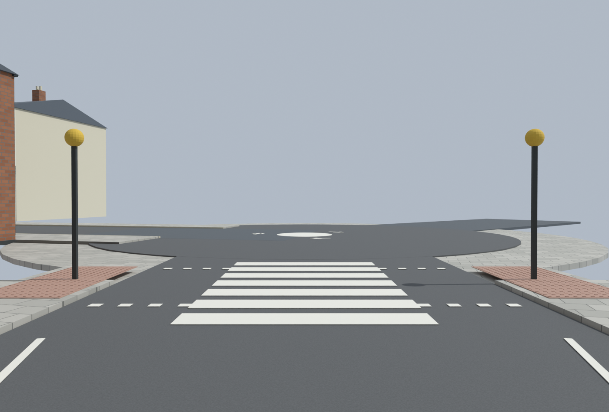
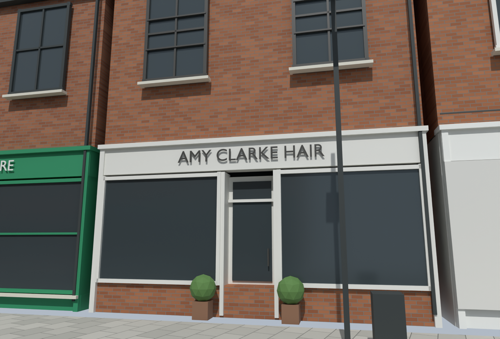
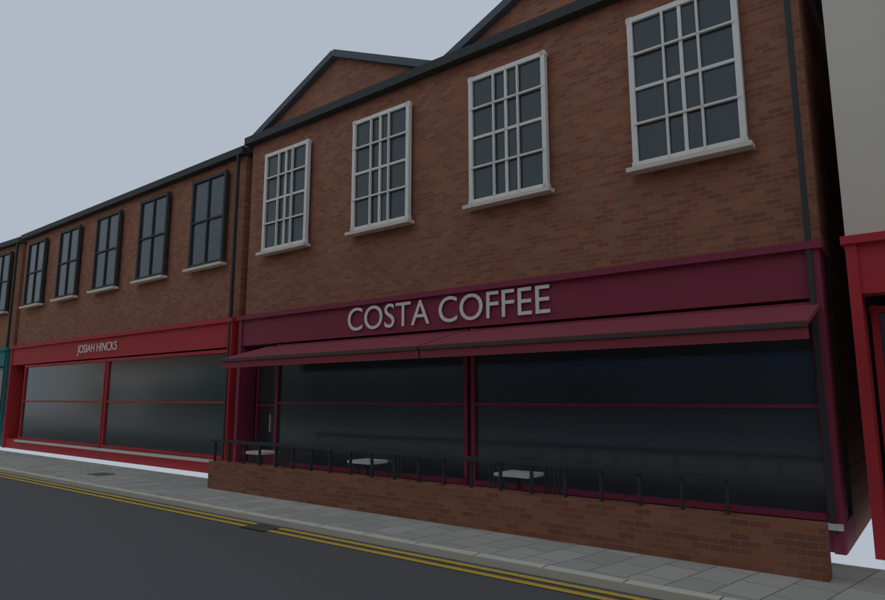
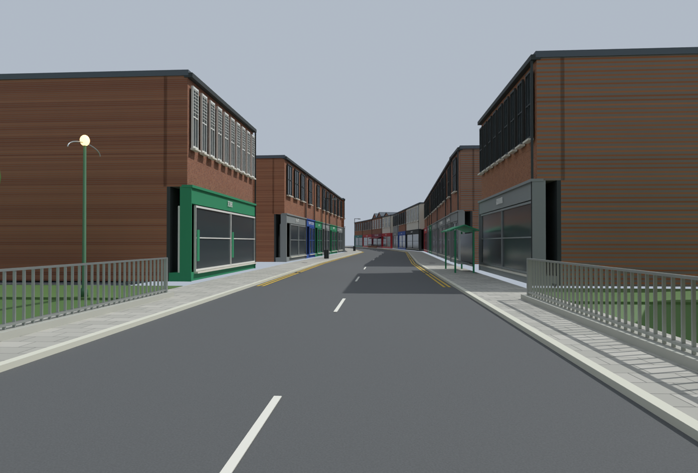

Syston street — latest Blender previews (v28)
Crossing and shopfront detail pass. Dimensions remain estimated; dropped crossing kerbs still need work. Blender previews; BO3 conversion pending.
1. Crossing and mini-roundabout
2. Amy Clarke Hair
3. Costa and town square
4. Street and bridge